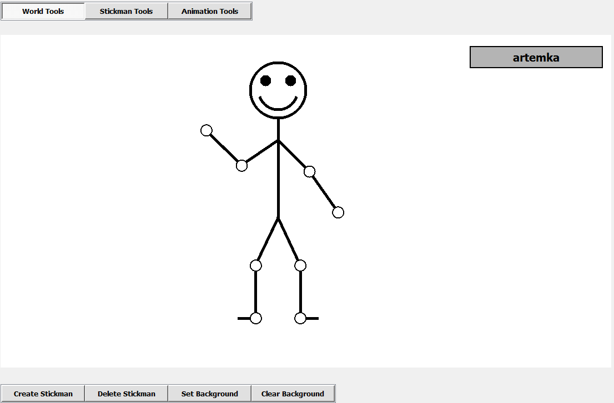
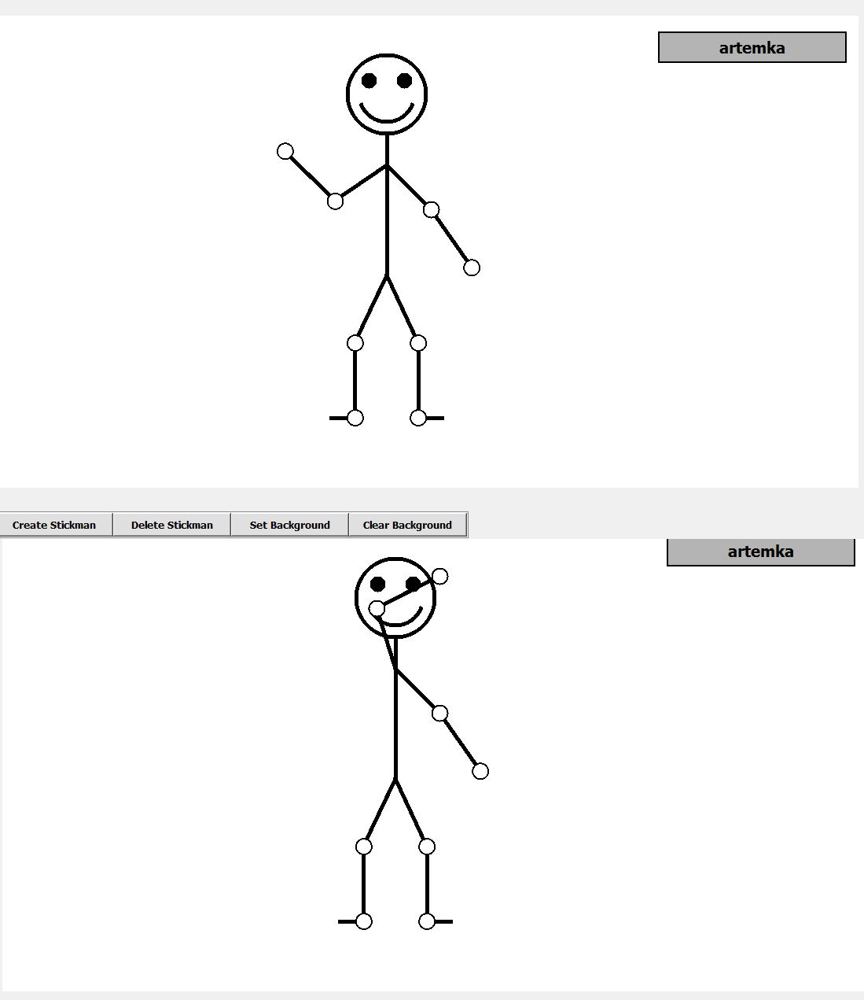
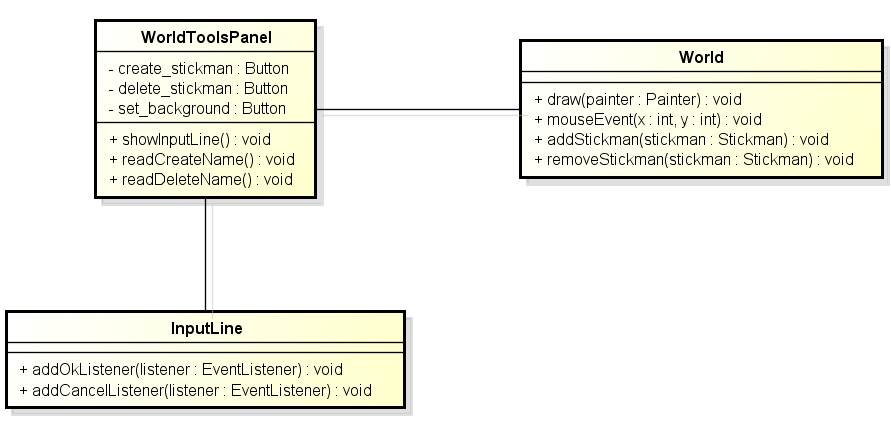

Created by: Artem Moskalev
Student Number: 465904
Study Program: Machine Learning and Data Mining
Project Assistant: Miki Tolonen
Documentation Date: 18 May, 2015
Project Description
The following project represents a Stickman Animator, which is a program that allows the user to create figures made of lines and circles, and to move them around in the user space. The program allows the user to create animations with stick figures, which in turn can be saved or loaded.
The Stickman Animator Project has been implemented on the highest level of difficulty. It has the following features implemented:
Graphical User Interface: Average Difficulty
The graphical user interface (GUI) includes buttons and text fields, as well as modal dialogs to prompt
the user about important events or errors. It has 3 main tabs, which represent different sets of tools.
World Tools: this set of tools allows the user to create stickmen, to delete stickmen, and also to set
or erase the background of the animation.
Stickman Tools: this set of tools allows the user to manipulate stick figures in
different ways, such as changing their expressions or making them say something. Also allows the user to
create animation frames.
Animation Tools: this set of tools allows the user to modify animation frames, to play or
pause the animation, or to save/load the animation.
The user interface also has the list of current stickmen and the list of current frames. They are shown automatically
depending on which part of the program the user works with. These lists are active components
which can be modified during the program run.
The user interface has good error handling which allows to prevent the user from making mistakes during
the program use. For example, if the user tries to load a broken file as an animation file, the program would complain,
notifying the user about his actions.
Stickman Joint Movement: Average Difficulty
Each stickman has 8 control points which will be further called "joints" in this document. All joints of a stick figure can be moved around without restraint. In case it were required, other types of stick figures could be created in the program easily. But only stick figures are shown at the moment.
Stickman Speaking: Average Difficulty
This feature allows the user to make stick figures say something. The user may place the words either to the left of the chosen stick figure or to the right of it. In case the text string is too long, it will be shortened, and three dots will be placed at the end of the string. All stickmen can say something at the same time, or only chosen ones can do it. Error checking is implemented and all empty strings are automatically shown as three dots.
Stickman Face Expression: Average Difficulty
This feature allows the user to make stick figures smile, be sad or confused. These three expressions can be modified from the stickman tools tab. Initially each stickman smiles.
Background Image: Average Difficulty
The white background of the scene can be changed for a brighter picture of .png or .jpg formats. It can be chosen using the file dialog which automatically searches for compatible files. In case the picture is chosen as a background, it would cover the whole space of the stickman scene. If the user grows tired of the new background, he can clear it and set the usual white background back.
Any Number of Stick Figures: Average Difficulty
The program user can create as many stickmen as he wishes. They are all created in the same place. But the application implements layering, so the user can drag stickmen from their initial place of creation. In case a particular stickman is needed from the list, he can be made active and dragged. The list of stickmen can grow infinitely.
Saving and Loading: Average Difficulty
The program allows the user to save his animations into a separate file to use later. The saved animation can then be loaded back into the program and further modified. This allows the user to work with multiple animations at the same time, saving and loading them if necessary.
Constant Joint Length: High Difficulty
In case the user moves joints around, the limbs formed by the joints never get longer than they have been. Each joint is connected to other joints, and in case one of the joints is moved, all dependent joints also move, making full-hand and full-leg motions possible in the program.
Constant Time and Interpolation: High Difficulty
The program implements 25-millisecond intervals for redrawing the stick figure world which makes the time flow constant for the user (around 40 frames per second). The program utilizes interpolation to make movements between frames smooth. In order to do that, the user needs to create multiple frames and play the animation between them. The movements are smooth and without jittering.
Stick Figure Relocation: Optional Feature
The stickmen can be moved around using their heads. If the stickman is dragged around in the world, so are its attached body and joints. The stickman cannot be dragged outside of the world (some part of its head always stays in the scene).
Animation Pausing and Splitting: Optional Feature
When animation is played, it can be stopped and restarted, as the user wants to. The user can also play the animation he is creating from a particular frame instead of playing it from the start. It helps the user to make quality animations.
Animation Frame Time and Copying: Optional Feature
The animation frames can be modified after they have been shot. Each frame has a 1 second time period from the previously shot frame initially. This can be changed, and the time can be from 0.1 seconds to 10 seconds. This allows the user to modify animation speeds and times conviniently. Some of animation frames can also be copied, creating identical frames. This allows the user to further improve the experience of creating animations in the program.
User Instructions
All user instructions can be representing with a Use Case Diagram. The following use case diagram contains all the actions which are possbile to perform using Stickman Animator:
Create New Stickman:
1) Open the World Tools tab (click the button on the Control Panel which consists of three buttons at the top of the screen). Click the button "Create Stickman" under the white field (canvas field) on which stickmen are drawn.
2) Type in the name of a new stickman. When you click "Ok", its name should appear on the right of the screen at the top of the list. The gray color shows that this new stickman has just become active. If the stickman with this name already exists, the error message will be shown next to the field, where the name has been typed in.

Delete Stickman:
1) Open the World Tools tab (click the button on the Control Panel which consists of three buttons at the top of the screen). Click the button "Delete Stickman" under the canvas field.
2) Type in the name of the stickman you want to delete. If the stickman exists, it will be removed from the stickman list (list of stickmen on the right of the screen), or if it does not, the error message will appear.
Set Background:
1) Open the World Tools tab (click the button on the Control Panel which consists of three buttons at the top of the screen). Click the button "Set Background" under the canvas field.
2) Choose the background image you would like to install from the system. The image will be placed as a background for the canvas field (or stickman world).
Move Stickman:
1) Click on the stickman`s head and drag it. The stickman will move along with the mouse. In the picture, the "Timo" stickman is clicked. He is drawn over "artemka".
2) Notice that by clicking on stickman, it will become active. Activity means, that its name becomes highlighted on the list of stickmen (list of names on the right of the screen) and that its layer becomes top layer. Top layer means that this stickman is drawn on top of other stickmen and that if you click on it, the stickmen under it do not recieve the click event. In the picture, "artemka" stickman has become active, and now drawn over "Timo".
Reposition Joints:
1) Click on stickman joints and drag them around. You will see that they move in the direction of the mouse pointer. The joint cannot get longer than it was, and all the dependent joints will move with the given joint (it means that if one moves the elbow, the hand moves too, like in the picture).
Change Expression:
1) Open the Stickman Tools tab (click the button on the Control Panel which consists of three buttons at the top of the screen).
2) Click one of the buttons under the canvas field on the left of the screen. The smiles represent three states in which a stickman can be: sad, smile and confused. Pay attention to the fact, that onlythe currently active stickman gets his expression changed. In order to choose another stickman, click on it in the canvas, or click on its name on the stickman list of names. The buttons are shown in the picture (from left to right - smile, sad, confused).
Say Something:
1) Open the Stickman Tools tab (click the button on the Control Panel which consists of three buttons at the top of the screen).
2) Type in the words that a stickman wants to say into the text field under the canvas field. Press one of two next buttons - the first one would draw the message box to the left of stickman, the other one will draw the words to the right of the stickman. The cross button will remove the text box:
Stickman can say both to the right and to the left:
If the text is too long, part of it will be replaced by three dots:
Create a Frame:
1) Open the Stickman Tools tab (click the button on the Control Panel which consists of three buttons at the top of the screen).
2) Click the button with the photocamera on it under the canvas field to the right of the screen. A new frame will be created.
3) Open the Animation Tools tab (click the button on the Control Panel which consists of three buttons at the top of the screen). Ensure that a new frame has appeared on the list of frames to the right of the screen. This list appears on the screen instead of the stickman list whenever the Animation Tools tab is opened.
4) Another way to create a new frame is to copy it. Select the frame on the list by clicking on it (you are still in Animation Tools).
5) A red notice "FRAME MODIFIED" should appear at the bottom of the screen. If the button with an icon of two sheets of paper is pressed now, a new frame appears, which is the copy of the activee frame.
Play Animation:
1) Open the Animation Tools tab (click the button on the Control Panel which consists of three buttons at the top of the screen).
2) Press the button with the play icon at the bottom of the screen. A red clock appears, which starts counting time from the beginning of the animation. The button can be clicked only in case there are at least two frames. While the animation is played, all the buttons become inactive. The animation can be paused or stopped with the buttons which appear after the play button is pressed.
Modify Animation:
1) Open the Animation Tools tab (click the button on the Control Panel which consists of three buttons at the top of the screen).
2) Choose one of the frames to modify (it can be either deleted, or its time can be changed)
3) Choose an operation to perform with the following buttons at the bottom of the screen:

4) If the frame is to be deleted, a button with the trashbin icon is to be pressed. The following dialog will appear:
5) The frame time can be changed. Frame time is the period in seconds from the previous frame, which the animation should interpolate between. When the time has been changed, the frame time changes on the frame list. In order to do this, type in or scroll the time in the box, and then press enter.
Save/Load Animation:
1) Open the Animation Tools tab (click the button on the Control Panel which consists of three buttons at the top of the screen).
2) In order to save the animation, there should be at least 2 frames on the list of frames. The "Save" button is to be pressed. A save file dialog will appear, which allows you to save the animation in your preferred directory.

3) In order to load the animation, a "Load" button is to be pressed. It proposes to look for the animation file of type ".armo" and when found and clicked ok, it will automatically load it to the list of frames on the right.
Program Structure
The program consists of two main logical parts as long as the structure is concerned. These parts are user interface classes and Stickman world model classes. The basic user interface components, and components which are utility classes for the user interface, are represented in the following diagram:
Class MainWindow is the first class which is initialized from the main method of the program. It has internal references to the Canvas, ToolSet and ControlPanel classes. It draws the main window of the program and sets its title and dimensions. In fact, it is also the parent of all other components of the user interface, and often referenced from its children to get references either to the Canvas or to the ToolSet.
ControlPanel
This class holds the reference to the ToolSet class. Its main task is to represent the three buttons which are used to alterate between different sets of tools of the main window. When a button is pressed it calls one of the methods of the ToolSet.
ToolSet
This class is the central component of the user interface. It holds the referenfces to 3 sets of tools - namely WorldToolsPanel, StickmanToolsPanel and AnimationToolsPanel. Each of these classes have a specific set of buttons and functions, shown in the User Instructions section of this document. The ToolSet also holds references to both on-screen lists - the list of stickman names(StickmanList) and frames list (FrameList). The main purpose of this class is to serve as a dispatcher between classes as long as the components of the program, even though having separate functions, often need call each other. Instead of saving direct references to all of other parts in each of the components, they are all stored in the ToolSet, and can be accessed from there when needed. The class also has some facade methods to hide or to show UI components.
Canvas
This class is the component on which the stickmen are drawn. It has an internal timer with the
pace of 25ms per frame. Every 25 ms a repaint methods of the component is called. In turn, the
Canvas dispatches the drawing operations to the World class,
which draws itself. The task of the canvas is to call the redraw method at a regular interval
and to dispatch the painting operation.
Canvas also dispatches all mouse operations to the World class (in fact,
there are 3 operations - MousePressed, MouseReleased and MouseMoved, which are dispatched to the
World, but the UML diagram is a simplification).
The following important parts of UI are tools sets. There are three tool sets - WorldToolsPanel, StickmanToolsPanel and AnimationToolsPanel.
WorldToolsPanel
The WorldToolsPanel class set is the tools, which create/delete stickmen and control the background. It has a simple structure and can be shown using the following UML class diagram:
WorldToolsPanel class has references to 4 buttons - "Create Stickman", "Delete Stickman", "Set Background" and "Clear Background". Each of these buttons has attached listeners to them. The class also has a reference to the InputLine component class. This is a custom component, which is an editable text line with two buttons - "OK" and "Cancel". InputLine can accept two listeners which are attached to its buttons. When the WorldToolsPanel create/delete stickman methods are called, they show this component, and then detect with readCreateName() or readDeleteName() methods, what the user has typed in. Then, the WorldToolsPanel called the World class Singleton through the getWorld() method and either adds or deletes a stick figure from the world.
StickmanToolsPanel
The StickmanToolsPanel class set is the tools, which work with a particular stickman: it can change their facial expressions or to make them say special things. The user can also make frames from these tools with a photocamera-button:
The StickmanToolsPanel has a set of buttons to change the expression of stickmen.
It also has the inputs necessary to input the text that stickmen say.
When changeExpression() is called, it calles the World
class method to get the active stickman instead. When the stickman instance is obtained, the active stickman
is directly manipulated and its expression is changed. The "talking" functionality is implemented
in the same way, only the method names differ.
StickmanToolsPanel has a button which can create new frames. When clicked, it finds a reference
to the FrameList component and calls its addNewFrame() method.
The new frame is in turn retrieved from the World class by using its
getFrame() method.
AnimationToolsPanel
The AnimationToolsPanel class set is the tools, which create, modify and run the animations. The toolset can also load or save animations on request:
The AnimationToolsPanel has a set of buttons to control animations.
The save/load buttons are required to control animation saving and loading. When the button "SAVE" is pressed,
it calles the class method saveXML(), which in turn creates an instance of
XML class. This class does all the job of converting frame information into
actual XML. loadXML() method is called when the "LOAD" button is pressed. It creates a
file choice dialog using which the user can specify the path to the animation file. After loading,
a set of frames is retrieved and placed instead of the current FrameList.
Error handling is also implemented. Broken files cannot be loaded and animations cannot be saved unless there
are at least 2 frames.
When a frame list exists, it can be modified with "DELETE", "COPY" and "TIME" buttons.
These buttons have listeners, which are internally connected to the FrameList.
The "COPY" button calls the copyFrame() method of FrameList.
The "DELETE" buttons calls the deleteFrame() method of FrameList.
The AnimationToolsPanel has an internal reference to a TimeInputLine
class which is a customly implemented component. It draws an input line with the spinbox, limiting values,
and "ENTER" and "CANCEL" buttons. These buttons can have listeners, which are installed from the
AnimationToolsPanel class. These listeners call in turn the
changeFrameTime(time: float) method of FrameList class.
It is important to note, that these methods do not need to pass the reference to the
frame they are updating. In fact, the currently active frame is always stored in the FrameList
instance.
Another important part of the AnimationToolsPanel class, is an
AnimationPlayer class which is actually responsible for playing all animations
and interpolation techniques. Internally, it has references to a Clock class component and
World class. The World class has a method called
setWorldFrom(frame : Frame) which allows to set the stickman world
(literally draw on the canvas) from the given frame.
Clock class has an internal timer which is used for interpolation. It is also
a custom UI component, which draws a running red clock, which counts the tenths of seconds from the
start of the animation. Clock also has a task variable which is a passed reference to
a method, which is called at a timer rate. In case of this applicaiton, every 25 ms to update the
interpolation.
The most important methods of the AnimationToolsPanel class are
reloadFrames(), updateAnimation() and interpolate().
In fact interpolate() method is a generalization of multiple methods
which interpolate the movements of joints and body separately.
The interpolation works in the following way - first, two frames are loaded. The time between these
frames is calculated. Next, it is divided by the number of interpolation frames
(found as time_between_frames/(TIMER_STEP=25ms)). This number shows how much time passes between imaginary frames
during the interpolation procedure.
Next, the distances between joint and stickman-body positions are calculated betwee two frames
(it finds the shift of each stickman body and each stickman joint).
Then, intermediate interpolation frames start being created automatically by
the updateAnimation() method.
The joints and stickmen bodies move according to the distances calculated by the
interpolate() method. Next, when the interpolation is over, the reloadFrames()
method loads the next frame, and calculates interpolation measurements once again until the end of the
frame list is reached.
StickmanList and FrameList
Two important user interface classes are StickmanList and FrameList. Both of these classes are UI components as they draw lists of clickable labels, as well as model components, storing the informtaion about the world state or animation state (in case of FrameList). These components have many common features, and repeating parts, which is not good from DRY (Dont repeat yourself) point of view, but logically, it is justified, because each of these components has a separate list of uses. Some of the functionality could have probably been moved to common classes, but I chose to leave it as it is not to overcomplicate the class structure.